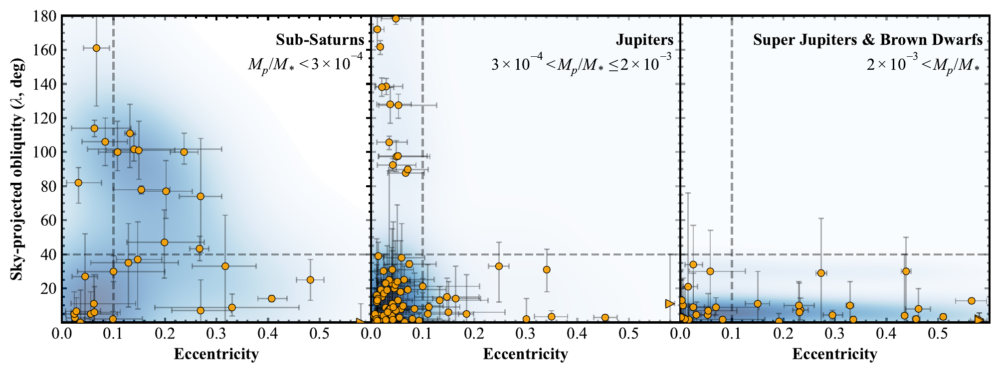
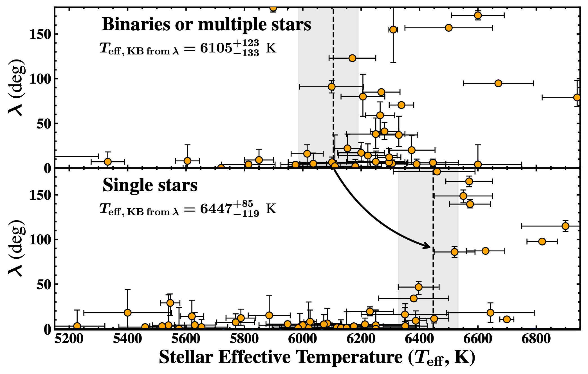
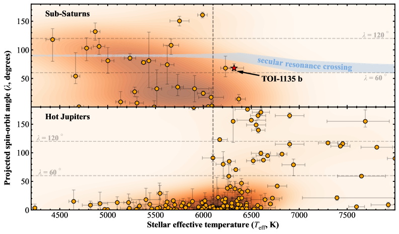
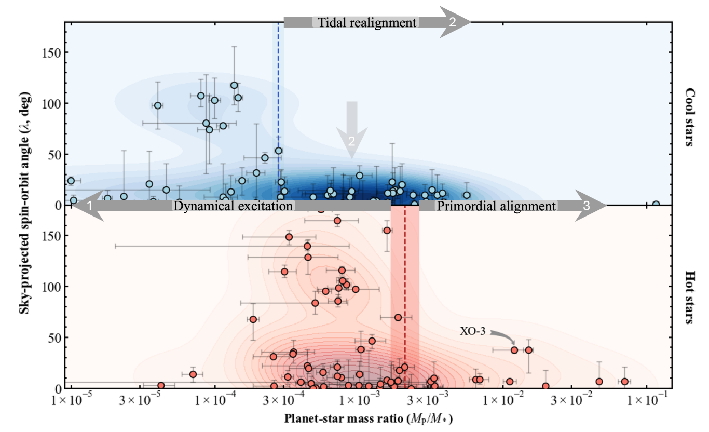
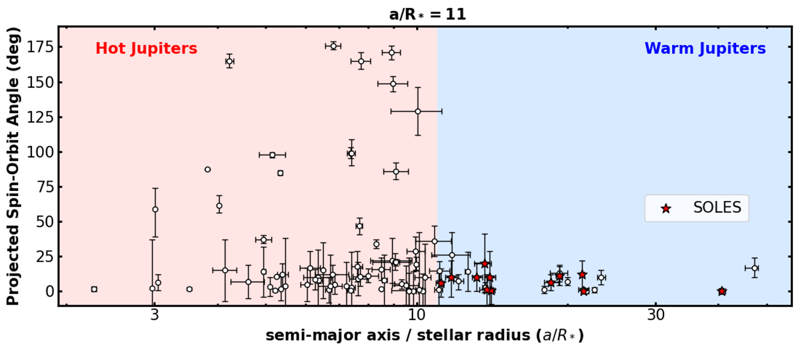
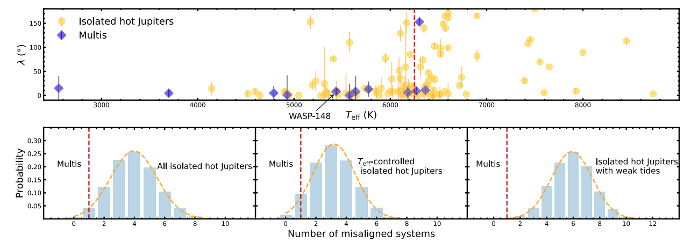

Stellar obliquity (λ) and orbital eccentricity (e) both trace the dynamical histories of close-in giant planets, but the observational picture has long been assembled from heterogeneous analyses that blur population-level trends. We homogeneously refit 255 systems with Rossiter-McLaughlin (RM) measurements through a joint global fit to spectral energy distributions, transit light curves, transit timing, and out-of-transit and in-transit radial velocities, yielding self-consistent posteriors for both stars and planets. Restricting to 145 single-star systems with reliable planet masses, we uncover pronounced, mass-dependent structure in the e–λ plane: (i) sub-Saturns (Mp ≲ 0.3 MJ) can be both eccentric and misaligned; (ii) Jupiters (0.3 ≲ Mp ≲ 3 MJ) are misaligned only on near-circular orbits; and (iii) super-Jupiters and brown dwarfs (Mp ≳ 3 MJ) stay aligned across the full eccentricity range. A two-dimensional Kolmogorov–Smirnov test confirms that the joint (e, λ) distributions differ significantly among the three mass regimes. These trends show that λ depends jointly on eccentricity and planet mass, implying that obliquity alone is not a unique tracer of evolutionary history.
[1] Wang, X.-Y., Wang, S., & Batygin, K. 2026, arXiv:2605.28719. [Accepted Date: May 2026] Catalog Website
The stellar obliquity transition, defined by a Teff cut separating aligned from misaligned hot Jupiter systems, has long been assumed to coincide with the rotational Kraft break. Yet the commonly quoted obliquity transition (6100 or 6250 K) sits a few hundred kelvin cooler than the rotational break (~6500 K), posing a fundamental inconsistency. We show this offset arises primarily from binaries/multiple-star systems, which drive the cooler stellar obliquity transition (6105+123-133 K), although the underlying cause remains ambiguous. After removing binaries and higher-order multiples, the single-star stellar obliquity transition shifts upward to 6447+85-119 K, in excellent agreement with the single-star rotation break (6510+97-127 K). This revision has two immediate consequences for understanding the origin and evolution of spin-orbit misalignment. First, the upward shift reclassifies some hosts previously labeled ‘hot’ into the cooler regime; consequently, there are very few RM measurements of non-hot-Jupiter planets around genuinely hot stars (Teff > 6500 K), and previously reported alignment trends for these classes of systems (e.g., warm Jupiters and compact multi-planet systems) lose the power to discriminate the central question: are large misalignments unique to hot-Jupiter-like planets that can be delivered by high-e migration, or are hot stars intrinsically more misaligned across architectures? Second, a single-star stellar obliquity transition near 6500 K, coincident with the rotational break, favors tidal dissipation in outer convective envelopes; as these envelopes thin with increasing Teff, inertial-wave damping and magnetic braking weaken in tandem.
[1] Wang, X.-Y., Wang, S., & Ong, J. M. J. 2026, ApJL, 996, L7. [Citations:8, Pub Date: 2026]


Sub-Saturns, planets smaller than Saturn but larger than Neptune, have recently been reported to preferentially occupy near-polar orbits. Yet this a conclusion has been based almost entirely on systems with cool stars. Measurements of stellar obliquity for sub-Saturns around hot stars remain extremely limited, and this scarcity of data hinders deeper investigation into the mechanisms capable of generating such extreme orbital tilts. Expanding the census into the hot-star regime is therefore essential for testing whether the polar preference persists and for constraining the underlying excitation processes. We extended stellar obliquity measurements of sub-Saturns into the hot-star regime and found that the perpendicular pattern persists, although with a slightly lower tilt of about 70° rather than a fully polar 90°. This sub-polar configuration is consistent with predictions from the secular resonance-crossing mechanism.
[1] Dugan, E., Wang, X.-Y., Heron, A., et al. 2025, ApJL, 994, L23. [Citations:N/A, Pub Date: Nov 2025] AAS Press Release
[2] Hixenbaugh, K., Wang, X.-Y., Rice, M., et al. 2023, ApJL, 949, 2, L35 [Citations:15]
The stellar obliquity of Brown Dwarfs is an underexplored regime due to the lack of transiting BDs before the launch of the TESS satellite, which is now rapidly expanding the known BD population. We find that systems with high planet-to-star mass ratios (MP/M∗ > 2 × 10⁻³), including Brown Dwarfs and super-Jupiters, exhibit low stellar obliquities, even around hot stars. This alignment contrasts with the significant misalignments observed in lower mass ratio systems, suggesting a fundamental distinction in their formation and dynamical evolution. Our analysis also highlights XO-3 as an outlier, with a significant misalignment possibly linked to an undetected stellar companion. (Note: As of December 6, 2024, the stellar companion was detected by Prof. Adam Kraus.) These results imply that massive companions retain their primordial alignment due to their isolated formation environments, whereas lower-mass planets experience greater dynamical instabilities, leading to a wider range of obliquities.
[1] Rusznak, J., Wang, X.-Y., Rice, M., et al. 2025, ApJL, 983, 2, L42. [Citations:8] AAS Nova Highlight
[2] Ferreira dos Santos, T., Rice, M., Wang, X.-Y., et al. 2024, AJ, 168, 145. [Citations:15]


The stellar obliquity distribution of warm-Jupiter systems is crucial for constraining the dynamical history of Jovian exoplanets, as the tidal detachment of warm Jupiters likely preserves their primordial obliquities. However, the sample size of warm-Jupiter systems with measured stellar obliquities has historically been limited compared to that of hot Jupiters, particularly in hot-star systems. In the SOLES project, we have contributed 15 new warm-Jupiter measurements, nearly doubling the sample of warm Jupiters with stellar obliquity measurements. Our analysis reveals that single-star warm-Jupiter systems tend to be aligned, even around hot stellar hosts. The current distribution of spin-orbit measurements for Jovian exoplanets indicates that misalignments are neither universal nor primordial phenomena affecting all types of planets. The absence of misalignments in single-star warm-Jupiter systems further suggests that many hot Jupiters, by contrast, have undergone a dynamically violent history.
[1] Wang, X.-Y., Rice, M., Wang, S., et al. 2024, ApJL, 973, L21. [Citations:20] AAS Nova Highlight
[2] Rice, M., Wang, S., Wang, X.-Y., et al. 2022, AJ, 164, 104. [Citations:52]
Compact multi-planet systems tend to be aligned was first mentioned by Albrecht et al. (2013). However, the compact multi-planet systems with stellar obliquity measurements are relatively rare compared to hot Jupiter samples. In this work, we present the sky-projected obliquity measurement of WASP-148b, a hot Jupiter in a compact multi-planet system, using data from the WIYN/NEID and Keck/HIRES spectrographs. Our findings show that WASP-148b has a low obliquity, suggesting that its orbit is well-aligned with the spin of its host star. This result aligns with previous observations that compact multi-planet systems around cool stars tend to exhibit low stellar obliquities, implying a formation history with minimal dynamical disturbances.
In contrast, high-mass and hot stars more frequently host misaligned planetary orbits, including both isolated hot Jupiters and compact multi-planet systems. This suggests that spin-orbit misalignments may be linked to the presence of distant giant planet perturbers, which are more common around these stars. Our study supports the idea that compact multi-planet systems generally form through relatively quiescent processes, whereas systems with misaligned planets, particularly those around hot stars, may have undergone external gravitational perturbations.
[1] Wang, X.-Y., Rice, M., Wang, S., et al. 2022, ApJL, 926, L8 [Citations:38]

Many hot Jupiters were initially thought to be solitary based on transit surveys. However, these surveys are less sensitive to smaller or non-transiting planets that might gravitationally perturb the hot Jupiter's orbit. The Transiting Exoplanet Monitoring Project (TEMP) addressed this limitation by conducting long-term, high-precision photometric follow-up, including Transit Timing Variation (TTV) analysis, using ground-based telescopes such as those at Xinglong Observatory in China. Analyzing the timing of transits in systems like HAT-P-25b and a larger sample of 39 hot Jupiters, TEMP found no compelling evidence for nearby planetary companions in resonance, which lends support to hot Jupiter formation mechanisms like high-eccentricity migration that tend to result in isolated hot Jupiters.
[1] Wang, X.-Y., Wang, Y.-H., Wang, S., et al. 2021, ApJS, 255, 15. [Citations:29]
[2] Wang, S., Wang, X.-Y., Wang, Y.-H., et al. 2018, AJ, 156, 181. [Citations:18]
[3] Wang, X.-Y., Wang, S., Hinse, T.~C., et al. 2018, PASP, 130, 064401. [Citations:21]